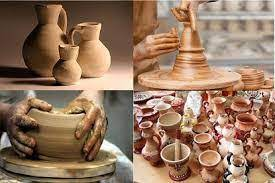
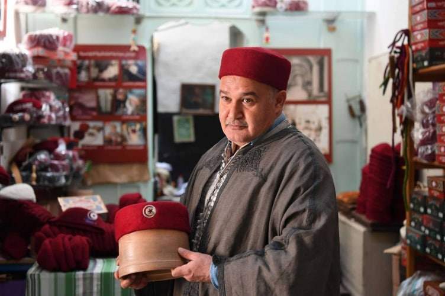

potters
Tunisian traditional dress

Tunisia is not only culturally rich and home to some of Hollywood's blockbuster locations, such as Star Wars and Indiana Jones, but it is also one of the top 15 garment suppliers in the world. With the advantage of being close to the European market, Tunisia is the fifth-largest supplier and the leading trouser supplier for the EU. The textiles and clothing sector in Tunisia is the largest industrial sector and is almost entirely export-oriented, with over 1,592 companies contributing 15% of the country's GDP in 2019. It is also one of Tunisia's largest employers, embracing over 158,000 people and contributing significantly to the national economy. In contrast, the leather and footwear sector is less developed, with only 260 enterprises, 73% of which export entirely and employ approximately 40,000 people. Mixed (Tunisian-foreign) ownership accounts for approximately 60% of all enterprises, employing 61% of the sector's workforce. Around 40% of all enterprises are entirely foreign-owned, with decisions made outside the country.